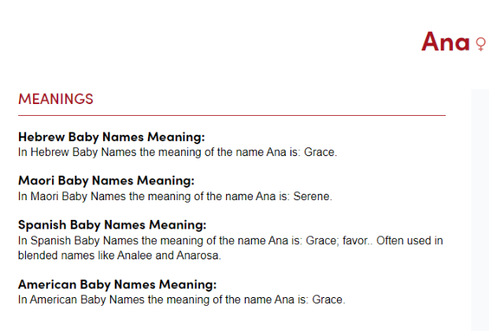
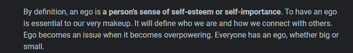

Chapter One
The Work of Remembering
Memory is not a shelf where the past sits still. It moves through the present: a word brings back a room, a scent returns a fear, an old kindness changes the meaning of a difficult day. We carry what has happened, but we also carry the person we were while it happened. This is why remembrance can be both a gift and a burden.
To remember well is not to replay every event until it becomes a wound again. It is to look back with enough honesty to learn what the moment asks of us now. The past cannot be changed, but our relationship to it can. A memory can become an accusation, an excuse, or a teacher. The difference lies in the posture we bring to it.
Bi-directional memory names this movement in two directions. We look behind us to understand how we arrived here, and we look ahead to decide who we will become. The future does not erase the past; it gives the past a new responsibility. A person who has been hurt may become more careful with another's pain. A person who has caused harm may become more truthful, more accountable, and more capable of repair.
Remembrance is not an escape from the present. It is a way of becoming present enough to choose again.
The first task, then, is simple but not easy: tell the truth about the story without making yourself its only hero or its only villain. Every life contains what was done to us, what we did, what we did not understand, and what we are still able to do.
Chapter Two
The Two Voices
Every serious inward journey meets a division. One voice asks to be protected at all costs. The other asks to be made honest. The first is quick to defend its image; the second is willing to be corrected. Calling this tension duality does not make the world a simple contest between heroes and enemies. It names a struggle that takes place within a single human heart.
The self that protects us is not always cruel. Often it was built for survival. It learned to avoid shame, to seek approval, to win arguments, or to stay guarded after loss. Yet a defense can become a prison when it is never questioned. What once kept a person safe may later keep that person from love, repentance, or growth.
Conscience speaks differently. It does not usually flatter. It asks whether our certainty has made room for another person's humanity. It asks whether we have confused being seen with being right. It asks whether a private wound has become permission to wound someone else.
Pause for Reflection
When have you defended an image of yourself instead of listening to the truth of a situation? What would repair look like if being right were no longer the first goal?
Faith, at its best, does not remove this struggle. It gives the struggle direction. It turns the heart away from performance and toward humility, mercy, and responsibility. The measure is not how convincingly one speaks about truth, but how patiently one can be changed by it.
Chapter Three
The Mirror and the Name
A mirror offers an image, not a verdict. It can show what is visible, but it cannot by itself explain the life beneath the face. The inward mirror asks a harder question: what have I refused to see because seeing it would require me to change?
In this book, Ana is used as a meditation on grace: the possibility that a person may return to the heart with sincerity rather than self-importance. The contrast with ego is not a claim that the self should disappear. It is a warning against placing the self at the center of every meaning, every conflict, and every sacred question.


The mirror becomes useful only when it leads beyond admiration or disgust. It is meant to make room for recognition. We may see pride and choose humility. We may see fear and choose patience. We may see an old injury and decide it will not become the author of every future relationship.
That choice is not made once. It is practiced. A mirror that tells the truth is not a punishment. It is an invitation to live with a clearer heart.
Chapter Four
Attention and the Inner Life
Attention is one of the quietest forms of devotion. What receives our attention begins to shape our inner world: outrage can become a habit, fear can become a lens, and distraction can become a way of avoiding the questions that matter most.
To pay attention is not to search every event for a hidden code. It is to notice what is actually present: the feeling beneath a reaction, the need beneath an argument, the person in front of us, the limits of what we know. This kind of attention makes us less easily controlled by impulse and less eager to turn uncertainty into certainty.
There are experiences that feel mysterious, overwhelming, or deeply meaningful. They deserve care. A spiritual interpretation can be held with reverence while still leaving room for health, community, and grounded counsel. No insight should require a person to abandon sleep, safety, relationships, or medical care.
The heart can be open without becoming unguarded; faith can be deep without rejecting care.
Silence helps because it interrupts the demand to explain everything immediately. Prayer helps because it turns attention from control toward relationship. Honest conversation helps because another person can sometimes see the part of our story we cannot see alone.
Chapter Five
Language, Translation, and Humility
Words carry histories. A word may be sacred in one language, ordinary in another, and transformed by translation, tradition, or use. For that reason, language can open a door to reflection, but it should not be forced to bear more certainty than it can hold.
In John, the Greek words ego eimi mean “I am” or, with emphasis, “I, I am.” In Exodus 3:14, the Hebrew ehyeh asher ehyeh is often translated “I am that I am”; because ehyeh is an imperfect form of “to be,” “I will be what I will be” is also a well-attested translation. “I am becoming” can be a meaningful spiritual paraphrase of ongoing presence, but it is not the literal wording of the Hebrew.
The Hebrew ani means “I.” Arabic and Aramaic ana are related first-person words. Jewish mystical writing sometimes reflects on the letter-play between ani (“I”) and ayin (“nothingness”), but that reflection belongs to a particular mystical tradition rather than a universal translation key. The connection is most useful when it makes the reader humbler: the self can speak, but it is not the center of all things.
Religious texts deserve patient reading. Their meaning lives in language, historical context, literary form, community, and interpretation. A resemblance between words can inspire a question, but it is not by itself proof of a doctrine. The search for truth grows stronger when it can acknowledge the difference between a personal insight, an interpretation, and an established historical claim.
This does not weaken faith. It protects it from turning into a demand that every ambiguity must resolve in our favor. Humility gives us the freedom to say, "I do not know yet," and to keep listening.
A Reading Practice
Read a passage slowly. Ask what it says in its immediate context before asking what it might symbolize for your own life. Then hold both questions with care.
Translation is also an act of hospitality. It asks us to meet another voice without absorbing it into our own assumptions. A sincere reader can seek patterns while remaining willing to be corrected by language, history, and the living people for whom those words matter.
Chapter Six
The Golden Rule of Balance
The Golden Rule is not merely a rule for public manners. It is a discipline for the inner life: treat another person as a full soul, not as a tool for fear, desire, anger, or control. That principle gives a spiritual image its test. An image that increases cruelty, isolation, or superiority has lost its way.
In this book, earth, water, wind, and fire are symbols for four movements within a person: steadiness, feeling, thought, and will. A fifth image, aether, names the space of prayerful awareness in which these movements can be held together. This is a contemplative map, not a claim about physical elements, hidden races, or the biological transformation of a body.
Four Corners, One Center
Earth asks: What keeps me grounded? Water asks: What am I feeling? Wind asks: What story am I telling myself? Fire asks: What am I about to do? Aether asks: Does this choice carry mercy, truth, and responsibility?
The Tree of Life can be approached in the same spirit. Its paths and spheres can become a language for examining how wisdom, understanding, strength, compassion, restraint, and action meet in a life. The point is not to master a secret diagram. The point is to become less divided in the way we love, speak, and act.
The seven deadly sins name what can happen when desire loses its center: pride, greed, lust, envy, gluttony, wrath, and sloth. Their corresponding virtues offer a practice for return: humility, charity, chastity, kindness, temperance, patience, and diligence. These are not labels to place on other people. They are questions to bring to our own reactions before those reactions become actions.
The Daily Equation
When a desire rises, name it without shame. Ask what it needs, what it risks, and what good practice can guide it. Then apply the Golden Rule: would I accept this action if another person did it to me? Let humility soften pride, generosity answer greed, respect guide desire, kindness answer envy, enough answer excess, patience answer anger, and steady effort answer avoidance.
Balance is not the absence of strong feeling. It is the refusal to let any one feeling rule the whole person.
Chapter Seven
The Spiritual Maze
A maze is a useful image for inner work. It has turns, false exits, repeated walls, and moments when a person must stop and orient themselves. The tesseract, too, can be held as a metaphor: a figure whose full shape cannot be seen from one ordinary angle. Neither image proves another realm. Both can remind us that a life is larger than the reaction we are having in one moment.
Imagine each square as a chamber of experience: fear, grief, desire, anger, pride, memory, hope, and love. To descend further into the maze is not to seek danger or abandon reality. It is to look more honestly at what moves us. We proceed only when the previous chamber has been met with balance, care, and the Golden Rule.
The trinity in this practice is presence, discernment, and action. Presence notices what is here without fleeing it. Discernment separates a feeling, image, or impulse from a command that must be obeyed. Action chooses the next good step. Together, they keep reflection connected to daily life, trusted relationships, and safety.
Some traditions speak of angels, watchers, demons, or elemental beings. This book receives those figures as sacred stories and symbols that may describe conflict, conscience, temptation, or wonder. They should never be used to excuse harm, claim authority over another person, replace medical or mental-health support, or encourage anyone to take risks with their body.
The way through the maze is not secret knowledge. It is a return to presence, discernment, and compassionate action.
Chapter Eight
The Question of Scale
The night sky and the smallest measured things can awaken the same humility. They show us that reality is larger than everyday intuition. Yet wonder is not the same as proof. A metaphor can illuminate without becoming a scientific conclusion.
Modern physics studies matter and spacetime with powerful mathematical tools. Ideas such as string theory, extra dimensions, and holographic models remain active areas of theoretical research. They are not established descriptions of everyday reality, and many have not received direct experimental confirmation. That uncertainty is not a failure of the question. It is part of the integrity of asking it.
We may use cycles, mirrors, boundaries, and dimensions as images for spiritual reflection. But the book should say clearly when it moves from science to metaphor. A soul's experience is not made more meaningful by borrowing certainty from technical language. It becomes more meaningful when it can stand honestly in its own register.
Author's note: This chapter uses scientific ideas as prompts for reflection, not as evidence for spiritual claims. Readers seeking physics should consult current university, research-institute, and peer-reviewed sources.
The useful question is not, "Can an idea prove everything I feel?" It is, "What does this idea invite me to notice about humility, scale, and the limits of my understanding?" Wonder becomes wiser when it does not demand that every mystery become a message about us.
Chapter Nine
The Discipline of Return
Return is the opposite of drifting. It is the deliberate act of coming back to what is true after fear, pride, distraction, or grief has carried us away. It may be a prayer, an apology, a walk, a conversation, or a small choice made differently than before.
Forgiveness is part of return, but it should not be confused with denial. To forgive does not require pretending that harm was harmless. It means refusing to let harm determine the whole shape of the heart. Where repair is possible, it asks for action. Where distance is necessary, it allows for boundaries. Where grief remains, it grants time.
Our lives change through repeated gestures more often than through one dramatic declaration. We become trustworthy by telling the truth in ordinary moments. We become merciful by practicing mercy when it is inconvenient. We become less afraid by returning to what is steady: faith, community, disciplined care, and the willingness to begin again.
The way forward is rarely a secret path. More often, it is the next honest step.
Bi-directional memory becomes a practice here. The past teaches. The future calls. The present is where we answer.
Chapter Ten
A Closing Prayer
May we remember without becoming trapped by memory. May we look inward without losing compassion for one another. May our search for truth make us more truthful, our faith make us more merciful, and our questions make us more humble.
May we recognize the moments when ego asks to rule and conscience asks to serve. May we make room for correction. May we seek wisdom in scripture, in careful study, in trusted community, and in the quiet work of repairing what can be repaired.
Peace be upon the sincere. May the heart remain open to truth, grounded in care, and willing to return.